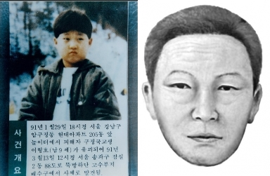

서울 강남구 압구정동 현대아파트에 살던 이형호(1981년생, 만 9세, 3학년) 군은
1991년 1월 29일 저녁에 놀이터에서 그네를 타는 모습이 목격된 것을 마지막으로 행방이 묘연해졌다.
그리고 그날 밤 서울, 경기 말씨를 쓰는 30대 남자의 협박 전화가 걸려왔으며,
이는 44일 동안 60여 차례에 걸쳐 계속되었다.
범인은 마치 각본이 있는 양 철저하게 움직였다.
협박 전화를 처음 걸고 이어서 경찰에 신고했는지를 확인하기 위해 다시 전화를 걸어
'서초경찰서 형사입니다. 거기 있는 형사들 좀 바꿔주세요'라는 말을 했고,
이를 수상히 여긴 강남경찰서 형사의 유도로 이형호의 의붓어머니가
'가정집에 무슨 형사가 있나요?'라고 말해 무사히 넘어가는 듯 했다.
그러나 범인은 이후에도 계속해서 경찰에 신고했을 경우를 대비해 치밀하게 행동했다.
이형호의 아버지 이우실의 그랜저 승용차에 설치된 카폰으로 연락하면서 서울 시내 곳곳으로 불러내 몸값을 받아내려 했다.
김포국제공항 국내선 주차장 2구역에 차를 세운 뒤 차 열쇠를 꽂아놓고 바로 600번 공항버스를 타고 집으로 돌아가라고 한
범인은 정작 나타나지 않은 채 그날 밤 전화를 걸어 '뒷좌석에 누가 타고 있었습니다'라는 변명(?)을 했다.
당시 강남경찰서 형사가 잠복해있었지만 트렁크에 타고 있었지 앞뒤 좌석에는 아무도 없었기 때문에,
범인이 일부러 넘겨 짚었던 것으로 추정된다.
이후 범인은 지하철 3, 4호선 충무로역 공중전화를 이용해 이우실의 카폰에 전화를 또 걸어
이번에는 대한극장 앞으로 불러냈고, 인근 제과점 건너편에 차를 세운 후 제과점에 들어가
커피를 마시며 기다리라는 지시를 했다. 하지만 제과점은 문을 닫은 상태였고,
범인은 즉시 연락해 '제과점 문이 닫혔습니다. 근처에 치킨 센터는 열려있으니 그쪽으로 가시죠'라고 말해 지루한 이동이 계속되었다.
그런데 이번에는 집으로 전화가 걸려왔다.
범인은 이형호의 의붓어머니에게 '지금 누군가가 주변을 계속 얼쩡거리고 있네요.
경찰에 연락하지 말라고 하지 않았습니까. 계속 잡아 떼실 건가요?'라고 협박했다.
당시 상황 역시 약속 장소 주변에 형사 여럿 잠복한 상태였지만,
모두 일반인이나 상인 등으로 변장한 상태였기 때문에 역시 범인이 넘겨 짚은 것이 분명했다.
그러나 이형호의 의붓어머니는 집요한 추궁에 삼촌이 같이 나간 것 같다고 말했고,
결국 경찰이 개입했음을 반 시인하고 말았다. 다만 마지막 통화에서 범인이 남긴 말을 보면 경찰에 신고하지는 않았다고 여긴 듯하다.
이에 범인은 직접 돈을 건네받기에는 무리가 있다고 판단, 은행 계좌를 개설해 돈을 받기로 한다.
범인은 한일은행에 윤정수, 상업은행에 김주선이라는 이름으로 계좌를 개설한 뒤 특정 장소에
계좌번호를 적어둔 메모를 남겨 이우실이 그것을 보고 입금하도록 지시하는 이른바 무인 포스트 방식을 썼는데,
두 은행에 2천만 원씩 총 4천만 원을 입금하라는 지시를 했고, 이우실은 경찰과 상의하여 한일은행에만 입금을 했다.
그리고 한일은행 전산센터에 형사들을 파견해 인출 여부를 꼼꼼히 살피고 있었는데,
정작 범인은 뜬금없이 2월 13일 저녁 "아이에 대한 애착이 없군요. 형호 죽기를 바라죠?"라는 협박을 했고
"88 도로를 타고 가시다보면 서울교라고 다리가 있습니다.
거기 밑에 철제 박스가 있고 메모를 돌로 눌러놨습니다. 이번이 마지막인 줄 알고 잘 진행해주십시오."
라는 최후 통첩을 했다. 메모의 종착점은 양화대교 인근 철제 박스였고,
이우실은 이곳에 가짜 돈이 든 봉지를 둔 채 떠났다.
주변에는 형사들이 잠복해 있었고, 잘하면 범인을 검거할 수 있는 마지막 찬스였지만,
이번에는 무전기로 의사소통을 하는 과정에서 철제 박스의 위치를 혼동하는 바람에 범인이 돈을 집어갈 동안형사들은 우왕좌왕했다.
그날 밤 범인은 전화를 걸어 '가짜 돈이 잔뜩 섞여 있습니다. 형호를 되찾길 바라지 않는 것으로 알죠.
다만 경찰에 신고하지 않으신 점은 감사하게 생각합니다.'라는 말을 남긴 채 연락을 끊어 버렸다.
하지만 범인이 은행 계좌에서 돈을 빼갈 것에 대비하여 한일은행에 입금되었던 돈을 상업은행 계좌로 송금했고,
드디어 2월 19일, 상업은행 상계동지점에 한 남자가 나타나 인출을 시도했다.
그러나 은행원이 단말기에서 사고신고 계좌라는 문구를 보고 당황해하며
남자를 의심을 하자 발각된 것을 알아챘는지 남자는 다급하게 은행원에게 통장을 빨리 달라고 했고,
이후 나온 통장을 낚아채듯이 빼가지고 황급히 달아났으며,
당시 해당 지점에는 CCTV가 설치되어 있지 않아 끝내 범인 검거에 실패하고 만다.
통장 개설 신청서와 메모지에는 지문이 전혀 없었고, 범인의 행방은 미궁 속에 빠져버렸다.
범인의 마지막 통화로부터 1개월이 지난 1991년 3월 13일, 한강공원 잠실지구 인근 터널(일명 토끼굴) 옆
배수로에서 어린 아이의 시체가 발견되었다. 확인해 보니 사체는 유괴된 이형호였고,
부검 결과 위에 남아있는 음식물이 실종 당일 친구네 집에서 먹은 음식인 것으로 확인되면서 사망 시점은 유괴된 직후로 추정되었다.
이러한 점에서 알 수 있는 사실은 형호 군은 유괴 당일에 이미 사망하였으며 범인은 애당초 이형호를 살려서 돌려줄 생각은 추호도 없었고,
돈만 가로챌 계획으로 44일간 피해 부모를 농간한 것이다.
유괴 당일에 살해해서 이미 아이가 죽은 상태에서도 뻔뻔스럽게 계속 금품 요구 및 협박 전화를 했다는 점에서 국민들로 하여금 큰 분노를 불러일으켰다.
